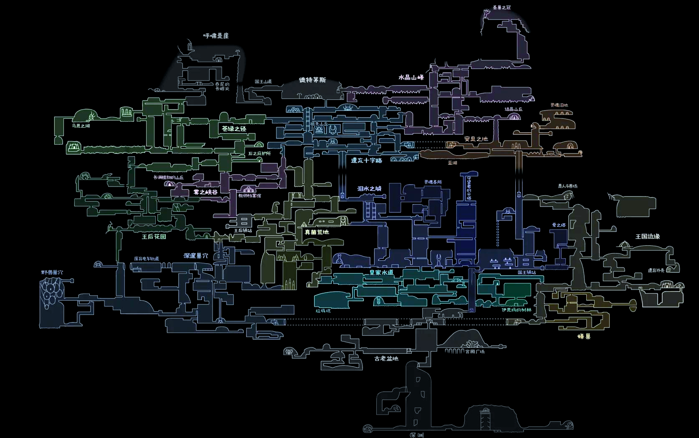

点击放大 · 全王国总图
怎么用这批参考
两张图层配合看：全图回答「区域之间怎么连」，区域拆解图回答「一个区域内部怎么长」。前者决定世界图，后者决定房间。
- 先看比例：每个区域的宽高比直接决定它是走廊、盆地还是竖井，卡片右上角都标了。
- 再看开口：数一数每个区域有几个出入口，进出方向决定它在世界图里是枢纽、动脉还是死胡同。
- 最后看密度：战斗区、叙事区、迷宫区在图上明显不是同一种笔触。
本目录只作设计参考，不得进入 assets/，也不参与 Godot 导入（已放 .gdignore）。
区域拆解
大致按探索顺序排列 · 点击查看大图与设计观察本批参考的缺口
全图里能看到、但这次没有单独拆解图稿的区域。已确认不补，需要时对照全图即可，这批素材只作参考、不求完整。